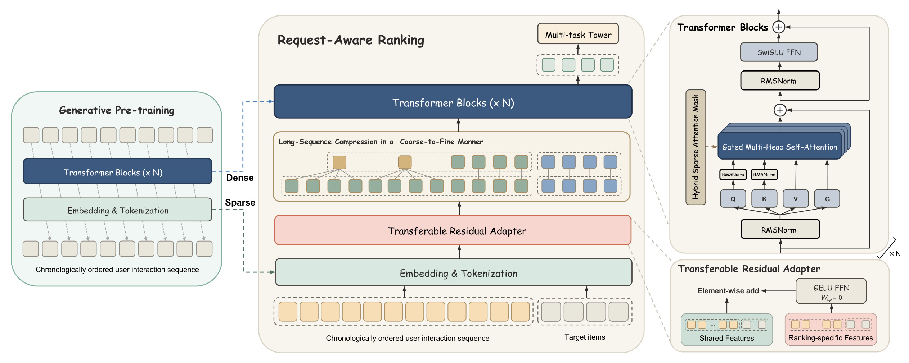
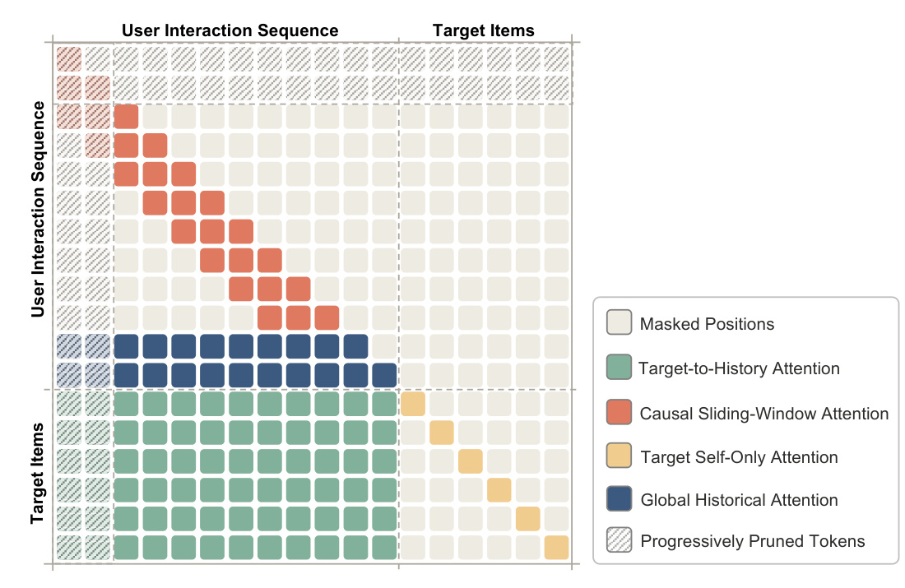
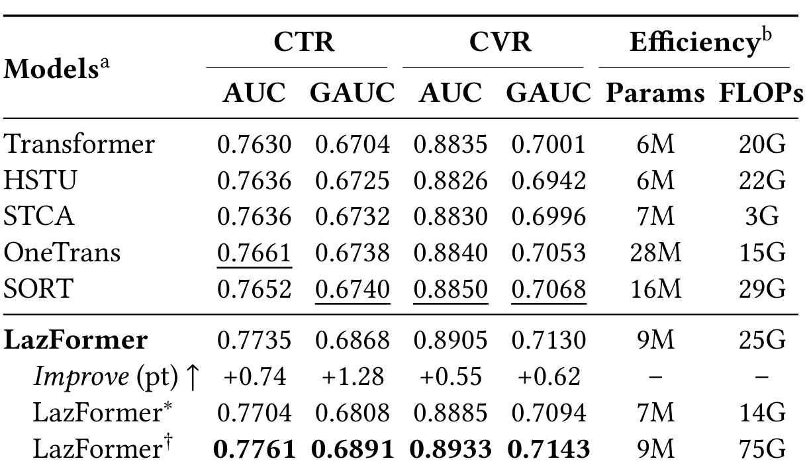
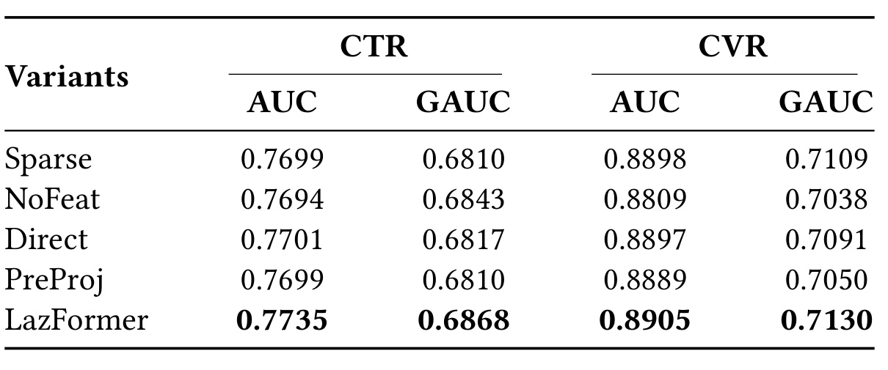
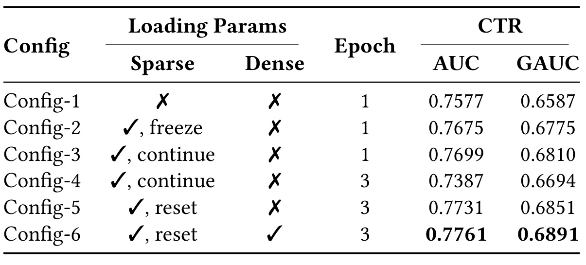
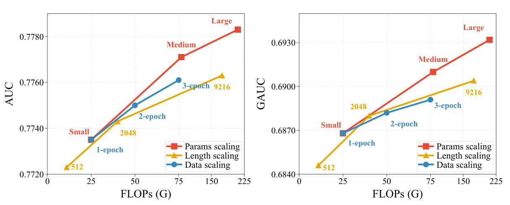
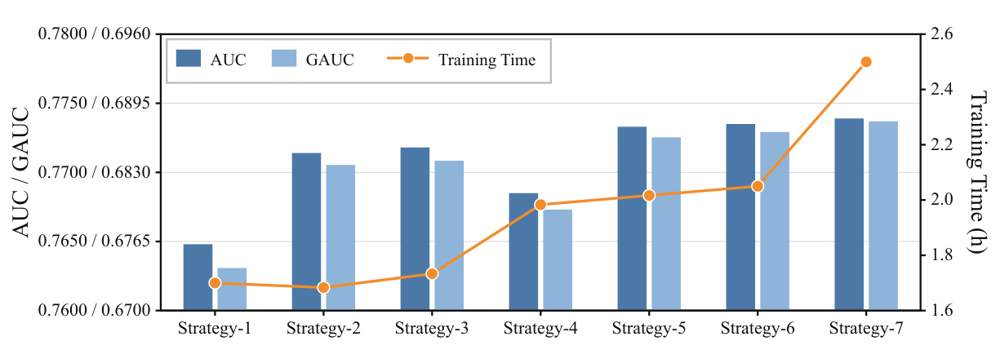
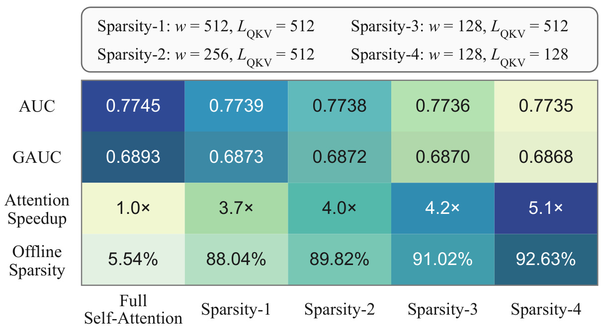
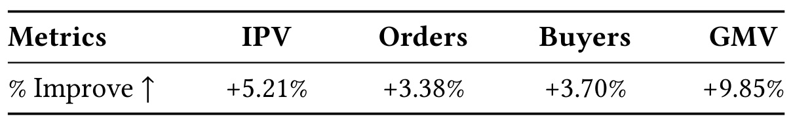

LazFormer：让生成式预训练同时迁移稀疏与稠密参数
LazFormer: Scaling Transformers for Industrial Recommendation via Transferable Generative Pre-training 由 Xiaodong Li 等人提出，作者机构为阿里国际数字商业集团。论文于 2026 年 9 月 14 日公开，本文依据 arXiv v1 原文精读，核验日期为 2026 年 9 月 16 日。论文入口。未核验到独立代码入口。PDF 中的 Conference’17 页眉是模板内容，不能作为会议录用信息。
预训练与排序可用的输入特征通常不一致，直接迁移稠密参数可能产生负迁移；排序阶段反复更新稀疏参数又容易过拟合，而冻结它们会限制其对排序目标的适应。
1. 背景和问题
1.1 排序模型为什么需要另一种扩展路径
工业推荐中的 Transformer 扩展，不能只照搬语言模型里“增加层数并继续训练”的经验。用户交互日志由商品标识、类目、店铺、品牌、场景以及时间相关特征共同组成，模型既要维护庞大的稀疏嵌入表，又要训练可以跨商品共享的稠密网络。两种参数从同一条样本得到监督，却承担不同任务：稀疏部分更接近具体实体的统计记忆，稠密部分学习如何组合信息、如何从历史提取当前偏好。如果把它们当作同一种参数一起从头训练、一起无限增加轮数，就可能让两者以不同速度进入过拟合区间。本文关注的正是这种训练动力学差异，而不只是换一个注意力算子。
既有可扩展排序研究已经证明，更深网络、更长序列和更多计算可以带来收益。作者在引言中提到以统一 Transformer 进行序列建模和特征交互的路线，也提到生成式序列转导的路线。但从头训练一个大排序网络，需要它同时学会辨别商品、建立序列关系、适配业务目标。排序标签又受曝光机制影响，单轮日志中不是所有商品都拥有同样充分的监督。先用大范围历史行为做生成式预训练，可以让嵌入和序列主干先学到可迁移的结构，随后将排序训练资源集中用于点击与转化任务。这里“生成式”主要指预训练时的下一个商品预测，并不意味着在线服务通过自回归解码生成最终推荐列表。
这种定位很重要。LazFormer 的最终接口依然是对一组已有候选商品预测 CTR 和点击后 CVR，输出送往既有排序链路。它没有提出全新召回索引、语义标识编码或者搜索束解码，也没有把点击概率和商品序列概率视为同一目标。预训练和排序之间有明确分工：前者利用连续交互的顺序关系，后者利用曝光、点击和转化监督。若把标题中的生成式预训练误读成端到端生成式推荐，便会错估部署接口和实验对照，也会误解为什么作者如此重视排序阶段独有的加购、下单以及行为间隔信号。
1.2 特征不一致与稀疏过拟合是两个不同问题
第一个障碍发生在迁移边界。预训练学习到的稠密网络，已经适应某个输入空间。如果排序突然增加一组新特征，并把它们直接拼接或随机投影进原有表示，输入维度可以通过工程手段对齐，表示的分布却未必对齐。网络会面对一种自己尚未适应的混合向量，预训练积累的注意力和前馈模式可能暂时失效。作者把这称为稠密参数负迁移。值得强调的是，“预训练有效”和“随便一种迁移方式都有效”没有逻辑等价关系；迁移失败也不能直接证明预训练知识无用，可能只是新特征进入主干的方式破坏了原来的初始化。
另一方面，删掉排序独有特征也不是一个理想答案。加购、下单以及它们相对最近点击的时间差，提供比普通点击更强的购买意图。它们对转化建模尤其重要。本文的消融中，不使用这类特征的变体能够保持相对不错的点击用户分组指标，却显著损失转化指标，说明“输入与预训练一致”本身并不是最终业务目标。真正需要的是让新信号逐渐进入模型，同时使稠密主干在迁移起点仍处于熟悉的表示空间。零初始化残差适配器就是围绕这个约束设计的。
第二个障碍发生在排序训练内部。只训练一遍日志，稠密主干可能还没吃透监督；重复训练则容易让海量稀疏嵌入过度记忆同一批样本。固定嵌入可以保护原始预训练知识，却失去适应点击和转化目标的机会。作者选择每轮开始时把稀疏参数重置到预训练状态，而让稠密参数继承上一轮终点。每轮内部，两部分仍然一起优化。这个安排把“允许适配”和“限制跨轮累积”拆开，因此不能简称为冻结预训练嵌入，也不能解释为每轮从头重训整个模型。它本质上规定了不同参数的记忆跨度。
此外还存在系统层约束。同一次请求往往有多个候选商品，如果每个候选都复制一份长历史，那么训练数据的序列化、存储、CPU 到 GPU 的传输和用户侧编码都会重复。这种浪费不是简单减少稠密参数就能消除的。LazFormer 用请求为单位组织样本，使多个目标共用一次历史编码，再通过注意力掩码阻断候选间的信息传递。在这个前提下，压缩旧历史、保留短期行为、使用局部与全局混合注意力，才有机会把节省出的预算投入更深网络和更多轮数。
1.3 阅读实验前先划清三个口径
本文的实证来自私有工业电商数据，预训练和排序的数据规模很大，但没有公开标准数据集的跨域复现。离线比较为所有基线提供相同的预训练稀疏参数，这是比“自己有预训练、对手完全从头训”更有意义的控制；不过只有 LazFormer 进一步迁移稠密参数，并且默认模型的层数与序列长度也更大。因此主结果需要结合缩小配置和消融共同阅读，不能单凭最优一行将所有收益都归因到一个模块。文中主表是三次运行均值，但没有给出完整方差、置信区间或全部调参搜索预算，统计精度仍有边界。
第二，稠密参数表中的九百万参数不包含约五十亿嵌入参数。它可以用于比较主干计算规模，不能当作整个服务的存储开销。第三，注意力加速和线上吞吐是不同层面的测量。稀疏注意力相对完整注意力达到五点一倍加速，同时线上新系统相对原有三层排序基线的单机吞吐下降百分之十二点一。两者完全可以同时成立，因为新系统还加深了主干并加长历史。判断技术价值时应把离线质量、局部算子效率、训练累计预算和真实服务代价放在同一张脑内账单上。
2. 方法
2.1 生成式预训练：学习可以带入排序的共同空间

图 1 左侧是生成式预训练，中间是请求感知排序，右侧展开了 Transformer 和残差适配器内部结构。两条由左向中间传递的路线分别对应稀疏参数和稠密参数：稀疏嵌入给商品及属性提供表示，稠密网络给历史建模提供初始化。中间底部同时放入历史交互和目标商品，说明在线任务已经变为对候选评分，并不是继续从预训练输出头采样商品。排序特有的特征经过适配器再进入共享表示，随后才进行粗细结合的历史压缩与主干计算；这个顺序意味着被压缩的历史表示已经包含排序多行为信号，而不是先把原始行为做无条件平均再注入。
右侧小图揭示了方法的两个稳定性来源。Transformer 内有归一化、门控注意力和带门控的前馈网络，适配器则显式标出上投影零初始化。前者属于共享主干的训练设计，后者负责保证迁移起点的输入不被随机新特征扰乱。它们不应混同为“冻结主干的低秩微调”：原文明确允许排序阶段的稀疏和稠密参数共同更新。图中多任务塔表示目标商品最终走向点击与转化预测头，也说明同一个历史表示需要兼顾两类监督。阅读图时还应留意图没有独立画出每轮边界的嵌入重置调度；重置是训练策略，不能从图中的参数加载箭头推断只在训练开始加载一次。图的直接证据是模块如何衔接，关于每个模块到底贡献多少收益则需要后面的消融表，而不能由箭头数量或框架复杂度得出结论。给定用户历史中的第 j 个商品，原文先拼接商品 ID、类目、店铺、品牌、距当前请求的时间以及停留时长等嵌入，再将场景嵌入单独投影。将原文式（3）至（5）合写可得：
符号解释：其中连接符表示向量拼接，两组投影把不同特征空间映射到共同维度。只要相应特征在两个阶段都可用，嵌入和投影就共享并用于迁移。序列通过因果 Transformer，当前位置只能读取已经发生的交互。原文式（6）至（9）的主体计算可归纳为每头注意力、拼接投影和两次残差更新：
符号解释：这里 Q、K、V 由投影与归一化得到，M 是因果掩码，d_k 为单头维度。作者文字中提到前置归一化、QK 归一化与注意力门控，但式（6）直接把多个投影放在 RMSNorm 表达式中，式（7）也没有展开门控。因此上式保留主计算，不能据此声称归一化与门控的全部实现细节已被唯一确定。最终隐藏态经投影得到查询，利用温度缩放的余弦相似度，把真实下一个商品与同批其他序列采样的负例区分开：
符号解释：负例集合不是完整商品库，所以这是采样对比形式的下一商品预测，不应直接把该概率视为全库校准概率。预训练用一万六千个同批负例，ID 嵌入维度六十四；方法段称温度可学习，实施段给出零点零七，是否只是初始值有待实现确认。这个目标让商品嵌入与历史主干一起学习，随后排序并不继续优化同一个采样损失，而是切换到业务标签监督。
2.2 可迁移残差适配器：先保持输入，再学习增量
排序新加入的是加购、下单及它们与最近点击之间的时间差。作者把这些信息挂在已有交互 token 上，没有为每一种行为额外扩展序列。这既补足购买意图，又避免成倍增加自注意力长度。原文式（13）至（15）为：
符号解释：s_j 是排序新特征，a_j 是其残差，上下投影为可学习参数。零初始化的是上投影，不是要求整个分支所有矩阵都置零。 初始残差为零，排序 token 就与原来共享输入一致；后续训练再学会用新信号修正表示。这种构造受到 LoRA 启发，但实际注入点在 token 输入，并不等同于对每个主干权重加低秩更新。它也不承诺整个训练过程保持原表示不变：共享参数仍更新，保证严格成立的是初始化时的零残差。从梯度角度可以进一步理解这一选择。只要下投影输出不全为零，上投影第一步就可以接收监督；下投影通过上投影传递梯度，在上投影不再为零后开始有效学习。这是依据公式作出的机制解释，而不是论文另报的训练测量。若同时把两层都初始化为退化常数，或者在 RMSNorm 之后任意改换注入位置，便不再是作者给出的同一种初始化条件。预训练与排序之间的共享特征预处理、类别编码和时间含义也必须一致，否则即便残差等于零，输入数值本身仍可能发生变化。
2.3 请求感知排序：保留近期细节，并控制信息可见性
作者保留最近的短期交互，把剩余长期交互按组求和。令原序列长为 L_i，保留数为 ℓ_i=min(L_i,L_s)，每组大小为 g，则式（16）至（18）写作：
符号解释：N_i 是长期压缩组数，T_i 是同一请求的全部候选。这里使用求和而不是均值，最后不足一组时按实际范围求和。原文存在一个需要公开保留的索引歧义：文字说序列按时间顺序组织，式子却把前 ℓ_i 项定义为保留的短期项，后面又说最后的历史 token 对应最新行为。实现必须明确原始顺序和重排规则，否则“保留近期”和“保留最早”可能被对调。本文不擅自把公式改成另一种索引，只说明作者的设计意图是短期保真、长期压缩。

图 2 的纵轴是查询位置，横轴是被读取的位置。历史区域红色窄带表示局部历史只能读取此前一个滑动窗口，蓝色区域表示靠近序列末端的全局历史查询可以读取此前更长范围。下方绿色矩形对应每个目标读取历史，右下角黄色对角线表示候选只看自己。注意“全局”在这里描述的是全局历史查询如何汇聚信息，并不是让所有历史都无条件读取未来的全局 token。因果条件仍然存在，因此从图上看并非任意两个历史位置都能互通。灰色位置是被掩蔽的连接，斜线区域表示随着层数增加被剪除的历史表示。
右下角结构尤其决定请求级训练的语义。多个候选只是共享用户历史的编码成本，没有通过注意力互相交换商品特征或标签；因此改变同一批请求里的其他候选，不应在这个计算图内直接改变当前目标的表示。这与候选集合之间相互比较的 listwise 重排有本质区别。历史也不读取目标，避免目标信息回流后再影响其他候选。所有目标都会保留到更深层，而被删去的是早期历史表示。目标在浅层已经可以读取较完整的压缩历史，深层只读取剩余历史，因此不能简单将最深层的一百二十八个历史位置理解为整个网络总共只看过一百二十八次行为。
这套图示还区分了两类节省。掩码减少注意力有效连接数，请求组织减少历史的重复序列化、传输和编码；两者针对不同瓶颈。仅把稠密注意力矩阵填成负无穷，不一定自动减少实际计算，作者说明借助 Flex Attention 将块稀疏模式编译成融合 CUDA 内核。图能说明允许和禁止的依赖，却没有给出每种候选数分布下的端到端传输占比，不能据此虚构请求共享带来的独立加速倍数。令压缩后历史长度为 L̃_i，窗口 W、全局历史数 G_i，式（19）至（21）可以保留为如下三种允许关系：
符号解释：p 为查询位置，q 为键位置。第一行是因果局部和全局历史，第二行是目标到历史，第三行是目标自连接。局部窗口只约束普通历史查询，全局查询仍受因果边界约束，目标则可看到当前层所有有效历史。被禁止的连接通过负无穷掩码得到零权重，不能仅以很小但有限的常数代替并声称严格隔离。每层之后历史长度还按式（22）线性减少：
符号解释：L 是总层数，N_min 是最少历史保留数。下一层只接收最近的相应数量历史和全部目标。默认原始历史二千零四十八条，短期保留一千零二十四条，其余按八条一组，压缩后为一千一百五十二条；窗口、全局数和最低保留数均为一百二十八。输出目标表示送往点击、转化任务头，请求组织和损失对应式（23）至（26）与式（2）：
符号解释：该式省略批次和目标求和，只保留原文双任务交叉熵形式。CVR 被定义为点击后转化概率，但论文没有在这条公式里完整展开样本掩码、延迟归因或任务加权，因此复现不能自行把所有未点击曝光都当作同口径 CVR 负例。式中的真实标签属于当前请求内相应目标，各任务头读取同一个目标的上下文化表示，共享主干不等于共享任务的标签定义。
2.4 非对称多轮训练：限制稀疏记忆跨度
原文式（27）规定每轮起点，而不是每一步起点：
符号解释：s 和 d 分别代表稀疏与稠密参数，init 来自预训练，K 表示上一轮结束步数。每轮内部两者都训练，跨轮只让稠密参数累积，稀疏参数重新从预训练快照出发。 因此稀疏空间可以适应这一轮排序监督，但不会把前几轮对相同样本的记忆无上限积累。最终部署使用最后一轮训练结束后的模型，而不是把最终嵌入再无条件清空；后者并非本文定义的推理流程。
这是一种优化日程，不是对泛化的形式证明。重置也可能造成稠密参数与稀疏表示在轮边界暂时不匹配，只是实验表明在作者设定下净收益为正。论文未明确嵌入优化器动量是否同步重置、新增排序专有稀疏参数缺少预训练快照时如何处理，以及分布式参数服务器如何实现一致恢复。它们是影响复现的具体缺口。更不能把多轮称为免费数据扩展：用户和曝光没有增加，增加的是同一数据被模型消耗的次数，主表中的训练 FLOPs 按轮数累计。
3. 实验结果
3.1 数据设置与离线主结果
预训练使用一年历史，按用户时间顺序切分子序列，覆盖一千六百万用户和一百一十亿 token；排序数据覆盖一千一百万用户、三亿七千万曝光，用连续二十五天训练，随后一天测试。时间切分比随机切分更接近日常上线，但文章没有报告多个月份独立重复的稳定性。训练在 H100 上使用 PyTorch 与 AdamW。主要基线统一为三层、隐藏维度二百五十六、四个注意力头、前馈中间维度一千零二十四、历史长度一千零二十四；SORT 另有一个共享专家和四个路由专家，每次激活两个。所有基线加载相同预训练稀疏参数，只有 LazFormer 额外迁移稠密主干。

表 2 第一组列是点击 AUC 与 GAUC，第二组是转化 AUC 与 GAUC，最后两列是排除嵌入后的参数量和累计训练浮点计算量。默认 LazFormer 得到点击 AUC 零点七七三五，对比最佳基线 OneTrans 的零点七六六一，提高零点零零七四，即零点七四个百分点。点击 GAUC 从最佳基线 SORT 的零点六七四零提高到零点六八六八，是一点二八个百分点。转化 AUC 从零点八八五零到零点八九零五，提高零点五五个百分点；转化 GAUC 从零点七零六八到零点七一三零，提高零点六二个百分点。每列最佳对手可能不同，不能把四列增益都笼统叫作相对 OneTrans 提升，更不能把百分点写成百分比相对增长。
默认模型五层、历史二千零四十八，而多数基线三层、历史一千零二十四。为排除仅靠扩大的解释，表中星号版本将 LazFormer 缩到相同层数和历史长度，点击 AUC 仍有零点七七零四，转化 AUC 零点八八八五，高于各自最强基线。其稠密参数七百万、十四 G FLOPs，也低于普通 Transformer 的二十 G。这个控制支持框架确有除规模之外的优势，不过仍是稠密迁移、适配器和高效注意力共同组成的方案，不能从缩小版本一行进一步分离每项贡献。
最后的匕首版本训练三轮，点击 AUC 达零点七七六一，GAUC 零点六八九一，转化两项为零点八九三三、零点七一四三。其九百万稠密参数没变，但累计 FLOPs 从二十五 G 变成七十五 G。表下注说明所有模型另有约五十亿嵌入参数，且计算量按同一请求级样本一次前后向的有效未掩蔽连接统计。因此这不是实际 GPU 时间，更不是整个系统只有九百万参数。文章的三次均值提供了一定重复性信息，却没有完整方差；“零点一百分点对工业任务已经很重要”是实践经验，并不能替代针对该表的显著性检验。
3.2 迁移消融：新特征要保留，也要正确进入主干

表 3 的 Sparse 只迁移稀疏参数，点击 AUC 为零点七六九九，转化 AUC 零点八八九八；完整模型分别为零点七七三五和零点八九零五。点击提升更明显，说明稠密迁移与稳定融合在此设置中确有收益。NoFeat 同时迁移稀疏与稠密参数，但去掉排序专有信号。它的点击 GAUC 零点六八四三高于 Sparse 的零点六八一零，却低于完整模型；转化 AUC 则落到零点八八零九。这个交叉现象比一句“删特征性能变差”更有解释力：共享点击序列知识仍然有用，但缺少购买意图信号会让转化判断明显受损，所以不能为了输入分布一致而舍弃这些特征。
Direct 直接融合新旧特征，PreProj 在迁移投影之前加一个融合投影。两者的点击 AUC 分别为零点七七零一和零点七六九九，都没有达到完整适配器的零点七七三五；转化 GAUC 分别为零点七零九一和零点七零五零，完整模型为零点七一三零。尤其 PreProj 增加了一层可学习映射也没有解决问题，支持作者“随机扰动迁移输入空间”这一解释。核心区别不是是否有额外参数，而是新参数在起点是否保持共享表示。零初始化残差确保这个起点约束，训练中再逐步引入新特征。
但这张表没有单独列出“同一残差结构、随机上投影”与“零上投影”的严格单变量对照，也没有报告迁移前后表示漂移的直接测量。因此表中结果支持所提出的完整融合方案优于这些对照，负迁移的机制解释仍有一部分来自结构推理，而不是被每个控制实验完全隔离。读者可以据此选择复现优先级：先重现完整模型和 Direct 的差距，再把残差连接、零初始化和投影瓶颈维度分别拆开测试。若业务新特征的语义与预训练共享字段本来高度一致，优势幅度可能与这里不同，本文并未证明所有领域都需要同样适配器。
3.3 多轮训练：重置与冻结给出相反适配能力

表 4 按顺序展示了预训练、可更新嵌入、重复训练和重置策略的影响。第一组完全从头训练一轮，点击 AUC 为零点七五七七；第二组加载预训练稀疏参数并冻结，一轮得到零点七六七五；第三组加载后继续更新，一轮达到零点七六九九。这三行先说明两个事实：预训练稀疏知识有明显价值，在该数据上允许其适配排序目标又优于始终冻结。因而后面的重置策略不是回到一个完全禁止稀疏学习的状态，而是试图保留一轮内已经验证有益的适配能力。
第四组将第三组的连续更新延长到三轮，点击 AUC 降到零点七三八七，比单轮下降零点零三一二，即三点一二个百分点，GAUC 也降到零点六六九四。第五组同样三轮，但每轮重置稀疏参数，点击 AUC 达零点七七三一，GAUC 零点六八五一。第六组再加载预训练稠密参数，达到零点七七六一和零点六八九一。这个阶梯式对照直接支持“多轮本身不保证变好，怎样管理稀疏跨轮状态才重要”。第五组已经证明重置的收益不完全依赖稠密预训练，第六组则展示两者可以叠加。
作者将连续三轮的劣化解释为稀疏过拟合，实验方向与这一解释一致。不过表中未给出训练集损失、分频次商品曲线和嵌入漂移，所以还不能精确定位是哪类商品记忆最先失控。也没有展示每轮重置后的短期震荡曲线，无法评估恢复开销在每日训练窗口中的占比。这里最可靠的工程结论是对具有类似稀疏规模和重复样本监督的排序系统，值得把“轮边界恢复预训练嵌入”作为独立可验证变量；不是所有多轮训练都会崩溃，也不是恢复快照必然优于数据增强、正则化等其他方案。尤其不同方法的最佳学习率和衰减日程可能不同，复现时应公平给予调参机会。
3.4 三个扩展方向都有效，但还不是普适定律

图 3 左图是点击 AUC，右图是点击 GAUC，横轴都是计算量。参数扩展的三个规模在原表 5 中分别为：小模型五层、宽二百五十六、中间层一千零二十四、九百万稠密参数；中模型八层、宽三百八十四、中间层一千五百三十六、二千三百万；大模型十二层、宽五百一十二、中间层二千零四十八、五千五百万。历史长度路线从五百一十二扩到二千零四十八，再到九千二百一十六；数据路线是一轮、两轮、三轮非对称训练。三条路线都呈现随预算增加而改善的趋势，因此高效计算模块的意义不仅是更快跑同一模型，也包括允许把预算重新投入表达能力和监督消耗。
图中参数扩展路线的增益较显著，历史和轮数扩展也都有正向变化，但这些点并不对应一个完整二维或三维网格。不能据图宣称“加一层等于多少新数据”，也不能把三条路线机械相加预测组合模型收益。不同点的横轴间距并非均匀，读图时应看实际计算刻度；曲线上的数字是配置标识而非新的独立指标。作者称其为扩展定律，更稳妥的解读是在测试到的有限规模和私有数据上观察到一致的经验扩展趋势，而不是已经拟合出可外推的幂律关系。
尤其“数据扩展”在此是重复消费同一批二十五天日志，真实独立用户、商品和曝光量没有按轮数成倍增加。它验证的是在重置策略下更多优化步骤仍能获得收益，不等价于拿到额外新鲜行为。线上分布持续变化时，扩大历史天数和重复旧日志可能产生不同效果。本文也没有给出大模型线上 A10 的吞吐或尾延迟，因此不能把离线十二层模型视为已经部署的最终方案。图 3 为后续预算规划提供了候选方向，最终仍需将同样预算下的效果与每日训练时限、内存占用和请求延迟共同比较。
3.5 压缩与稀疏：精度损失是明确代价

图 4 同时放入 AUC、GAUC 和训练小时数。左轴为两种质量指标共用的配对刻度，右轴是时间，橙色折线读右轴，蓝色柱读左轴，不能比较柱子高度和折线高度来判断同一数值大小。原表 6 的七组配置依次是：全部按四条一组压到五百一十二；保留二百五十六并将其余按八条一组压到四百八十；保留五百一十二、其余十六条一组，最终六百零八；全量按两条一组得到一千零二十四；保留一千零二十四、其余十六条一组得到一千零八十八；保留一千零二十四、其余八条一组得到一千一百五十二；最后一组完全不压缩，保留二千零四十八。
最有辨识力的比较是第四组与第二、三组。第四组保留的总 token 更多，却因为把近期行为也一起混合，效果仍不如保留部分近期原始粒度的配置。它支持“信息保真度如何分配”比单纯压缩后长度更重要。第五和第六组保留相同数量的近期行为，第六组对长期部分压得更轻，在压缩策略中达到最好表现；完全不压缩的第七组质量略高，但训练时间显著增加。图中的时间大致从一点七小时附近增加到二点五小时附近，原文没有逐点数值表，不能把视觉估读伪装成精确秒级测量。
默认选择第六组，体现的是质量和时间的折中，不能说它无损压缩。短期一千零二十四条的阈值也是当前数据下的配置，并不是从理论推导得到的通用长度。高频用户、低频用户和促销期可能需要不同粒度，求和池化还可能让组内次序被消除。本文没有用户活跃度分组曲线，无法判断较短用户是否同样受益。对外复现应同时报告压缩前后实际长度分布，而不能只给最大长度；否则两个数据集都写“二千零四十八”也可能对应完全不同的平均计算负担。

图 5 将完整自注意力与四个稀疏设置逐列比较。完整注意力的点击 AUC 为零点七七四五，GAUC 为零点六八九三，速度记为一倍。第一种配置窗口五百一十二、剪枝后历史五百一十二，稀疏度百分之八十八点零四，注意力加速三点七倍，AUC 零点七七三九。接着窗口收缩到二百五十六和一百二十八，剪枝长度仍是五百一十二，速度分别四倍与四点二倍。最后把保留历史进一步减少到一百二十八，稀疏度百分之九十二点六三，加速五点一倍，AUC 零点七七三五，GAUC 零点六八六八。
因此最后配置相对完整注意力的 AUC 下降零点零零一，即零点一零个百分点；GAUC 下降零点零零二五，即零点二五个百分点。作者接受这项损失，是因为节省出的计算可以投入更深网络、更长序列和更多轮数，综合效果优于一味保留密集连接。这个理由需要与图 3 联合解释，而不能把图 5 的单独对照写成“稀疏化提高精度”。此外完整自注意力列仍标了百分之五点五四的离线稀疏度，说明其统计基准本身不是所有位置全部有效；论文没有进一步分解这部分来源，不能自行归结为某一种掩码。
五点一倍测量对象明确是注意力计算，不是整网训练，也不是在线 QPS。嵌入查询、前馈网络、数据传输、目标预测头等部分仍然消耗资源。随着注意力变快，这些部分在总耗时中的相对占比会上升，所以整网加速自然可能小得多。图中各稀疏配置有明确质量下降，恰好提醒读者效率优化需要记录所牺牲的信号。请求级样本组织带来的收益也没有在该图中独立拆出，不能把它与五点一倍再相乘计算所谓总加速。真正可复用的是一套可配置的预算再分配方案，而不是脱离序列长度与硬件的固定倍数。
3.6 线上实验：商业指标上升，吞吐有所下降

表 7 来自工业电商首页推荐的两周 A/B 测试，线上基线是三层 SORT-like 排序模型。相比该生产基线，商品详情浏览量提高百分之五点二一，订单数量提高百分之三点三八，买家数量提高百分之三点七零，GMV 提高百分之九点八五。这四项是相对改善，不是概率的百分点提升。订单和买家同时上升，说明增益不只体现为单一流量指标；GMV 增幅大于订单增幅，可能还受到成交结构等因素影响，但论文没有展开客单价、品类、折扣或商家结构，因此不能自行解释为某一类价值偏好被显式优化出来。
这份线上证据的重要性在于方法已经跨过私有离线测试，并在实际生产排序链路上报告了净业务收益。不过它仍然是整个新系统与旧生产系统的比较：主干从三层变五层，历史变长，也加入迁移、适配和高效建模。因此百分之九点八五不能单独归给稀疏重置或零初始化适配器。文章没有披露具体流量比例、置信区间、分桶方法和实验期间的外部变化，这些缺口限制了对效果可迁移性的判断。不能把一次平台结果当作另一平台上线就会重复出现的预期值。
更值得与表格一起记录的是正文中的成本：NVIDIA A10 单机 QPS 下降百分之十二点一。作者认为业务收益抵消了这项代价，但文中没有给出完整收入成本核算。若简单假设其他条件不变且可以线性扩容，要维持同样请求量，算术上机器数比例约为一除以零点八七九，即增加约百分之十三点八；这只是由吞吐变化推导的容量参考，不是论文实际扩容数据，也未计入利用率、冗余和尾延迟。线上部署结论应是质量收益伴随可量化服务成本，而不能以局部注意力五点一倍加速覆盖吞吐下降。服务预算紧张的团队尤其需要先确认自己的约束是平均吞吐、尾延迟还是训练窗口，再决定如何使用这些模块。
4. 总结
4.1 这篇工作的可迁移认识
LazFormer 把生成式预训练的价值从“给嵌入一个好起点”扩展到“给整个排序主干一个可适配的起点”。其设计可以沿三条因果链理解：零初始化残差先守住输入空间，再让购买意图进入主干；请求组织与混合稀疏注意力减少长历史的冗余处理，把预算留给容量和训练轮数；轮边界重置让稀疏参数保留单轮适配能力，同时让稠密参数跨轮累积。这些模块围绕具体训练与部署障碍组合，而不是简单宣称 Transformer 越大越好。离线对齐配置、融合消融、六组多轮实验和线上测试共同支持方案在作者平台上的有效性。
我认为最值得借鉴的研究方式，是把参数类型、迁移边界和计算复用分别设成可实验的变量。稀疏与稠密参数并不需要遵守完全相同的训练历史；同一次请求的候选也不需要复制相同用户序列。与此同时，论文公开了一些不占便宜的结果：无特征迁移在某个点击分组指标上并不差，压缩和稀疏确实有精度损失，线上吞吐也确实下降。这些反例使方法更容易被准确理解。对业务团队而言，保留这些限制比只摘录最优 AUC 或 GMV 更有助于决定复现边界。
4.2 四项风险与限制
- 数据外推风险。 结果主要来自一个私有电商推荐平台，测试紧接训练时间，尚不足以证明跨平台、跨季节或冷启动群体都有同样收益。大规模数据本身不能替代跨场景评估，长尾商品的稀疏重置是否受益也需要分组证据。
- 实现不唯一风险。 历史索引与最近行为的文字定义存在歧义，归一化和门控细节未全部展开，温度是否固定也不明确。重置优化器状态、排序新稀疏字段以及 CVR 样本口径仍需核验，不能仅抄公式就认为与作者训练完全等价。
- 归因与统计风险。 默认主模型同时增加深度和长度，线上又是整体系统替换；缩小版本和消融提高了可信度，但没有把每个结构与训练选择完全正交拆分。均值、局部曲线和业务增益缺少完整置信信息，不应被解释成通用效果保证。
- 成本口径风险。 九百万是排除五十亿嵌入后的稠密参数；七十五 G 是三轮累计训练计算；五点一倍仅针对注意力；线上单机吞吐下降百分之十二点一。忽略任意一项都会让预算比较失真，尤其不能把重复训练写成新增真实数据。
4.3 三个具体跟进方向
第一，先建立同层数、同历史、同训练预算的迁移对照，再分别测试无适配器、随机残差和零初始化残差。记录排序开始几千步的输入范数、主干梯度和验证指标，直接判断收益是否来自更平稳的迁移过程，而不是额外参数或不一致调参。第二，围绕轮边界恢复做完整状态实验：比较只重置嵌入、同时重置优化器状态、冻结以及持续更新，并按商品频次和用户活跃度分组，观察是否存在短期恢复震荡和长尾遗忘。
第三，把请求共享、历史压缩、稀疏内核和逐层剪枝逐项计时，分别报告数据传输、嵌入、注意力、前馈和预测头占比，同时测平均吞吐与尾延迟。再以固定机器预算选择深度、长度和轮数组合，并保留线上回滚版本。这样的跟进能回答最实际的问题：在自己的特征分布和服务约束下，哪些节省可真正兑换成质量，哪些成本仍需要额外承担。论文已经提供有价值的起点，但完整复现仍需要补齐这些具体接口与测量。